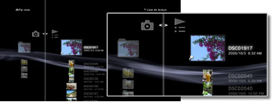
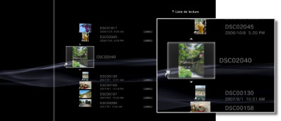

Photo > Utilisation de listes de lecture > Modification de listes de lecture
Modification de listes de lecture
Vous pouvez ajouter des images à une liste de lecture, ou encore supprimer ou réorganiser les images d'une liste de lecture.
Ajout d'images à des listes de lecture
1. |
Sélectionnez |
|---|---|
2. |
Sélectionnez la liste de lecture à modifier, puis appuyez sur la touche |
3. |
Sélectionnez [Modifier].  |
4. |
Appuyez sur la touche |
 (Photo) >
(Photo) >  (Listes de lecture).
(Listes de lecture). .
. , puis sélectionnez l'image à ajouter à la liste de lecture parmi les images enregistrées sur le disque dur. L'image est ajoutée à la liste de lecture. Lorsque vous avez terminé d'ajouter des images, appuyez sur la touche
, puis sélectionnez l'image à ajouter à la liste de lecture parmi les images enregistrées sur le disque dur. L'image est ajoutée à la liste de lecture. Lorsque vous avez terminé d'ajouter des images, appuyez sur la touche  pour arrêter la modification.
pour arrêter la modification.Suppression d'images dans des listes de lecture
1. |
Sélectionnez |
|---|---|
2. |
Sélectionnez la liste de lecture à modifier, puis appuyez sur la touche |
3. |
Sélectionnez [Modifier]. |
4. |
Sélectionnez l'image à supprimer de la liste de lecture, puis appuyez sur la touche |
 . L'image est supprimée de la liste de lecture. Lorsque vous avez terminé de supprimer des images, appuyez sur la touche
. L'image est supprimée de la liste de lecture. Lorsque vous avez terminé de supprimer des images, appuyez sur la touche Conseils
- Même si une image est supprimée d'une liste de lecture, le fichier d'image n'est pas supprimé du disque dur.
- Si une image ajoutée à une liste de lecture est supprimée du disque dur, elle est aussi automatiquement supprimée de la liste de lecture.
Réorganisation des images dans des listes de lecture
1. |
Sélectionnez |
|---|---|
2. |
Sélectionnez la liste de lecture à modifier, puis appuyez sur la touche |
3. |
Sélectionnez [Modifier]. |
4. |
Sélectionnez l'image que vous souhaitez déplacer, puis appuyez sur la touche  |
5. |
Appuyez sur les touches |
 .
.
 pour déplacer l'image vers la position de votre choix, puis appuyez sur la touche
pour déplacer l'image vers la position de votre choix, puis appuyez sur la touche